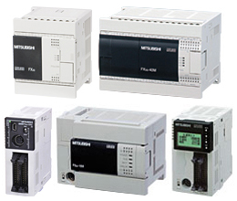
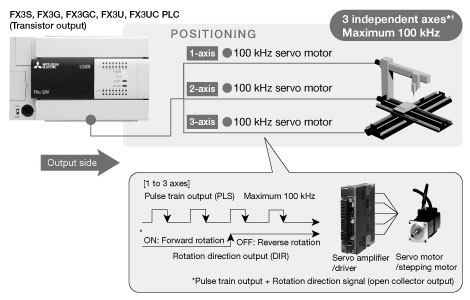
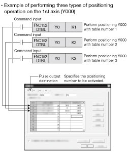

MELSEC-F Series Fungsi keluaran pulsa internal PLC dan fungsi pemosisian

Fungsi pemosisian seri FX3S, FX3G, FX3GC, FX3UC (unit utama: tipe keluaran transistor)

- Sistem berbiaya rendah dapat diwujudkan tanpa perangkat ekspansi khusus yang didedikasikan untuk pemosisian.
- Pemosisian 1 kecepatan dan pemosisian berulang dapat dilakukan dengan mudah oleh PLC saja.
- Instruksi pemosisian khusus sudah terpasang. Dengan instruksi pemosisian pengaturan batch (DTBL) yang baru, pemosisian dapat dijalankan hanya dengan menentukan dalam program PLC jumlah operasi pemosisian yang ditetapkan dalam GX Developer.
(FX3S: instruksi DTBL tidak didukung) - 3 sumbu independen dapat menghasilkan rangkaian pulsa maksimum 100 kHz dari keluaran Y000, Y001, Y002 (keluaran transistor).
(Model FX3S dan FX3G 14 pt/24 pt dan FX3GC memiliki 2 sumbu independen)
Contoh konfigurasi sistem

- *1Model FX3S dan FX3G 14 pt/24 pt dan FX3GC memiliki 2 sumbu independen.
Instruksi Mode Pemosisian Data Batch (DTBL)

| Instruction | Deskripsi |
|---|---|
| DVIT (FNC151)*2 | Interrupt Positioning |
| PLSV (FNC157) | Variable Speed Pulse Output |
| DRVI (FNC158) | Drive to Increment |
| DRVA (FNC159) | Drive to Absolute |
- *2hanya PLC FX3U/FX3UC.
Spesifikasi
| Items | Spesifikasi |
|---|---|
| Pulse Output | Y000, Y001, Y002* of transistor output type main unit can each output maximum 100 kHz (3 independent axes, FX3S and FX3G 14 pt/24 pt models and FX3GC have 2 axes). Rotation direction signal output included |
| Output (Y000 to Y002*) | Transistor output: Open collector (use transitor output type main unit) Use voltage, current range: 5 to 24 V DC/10 to 100 mA |
| Programming languages | [Pulse output instructions: 2 types] Pulse output (PLSY), pulse output with acceleration deceleration (PLSR) |
- *Model FX3S dan FX3G 14 pt/24 pt dan FX3GC memiliki Y000 hingga Y001.